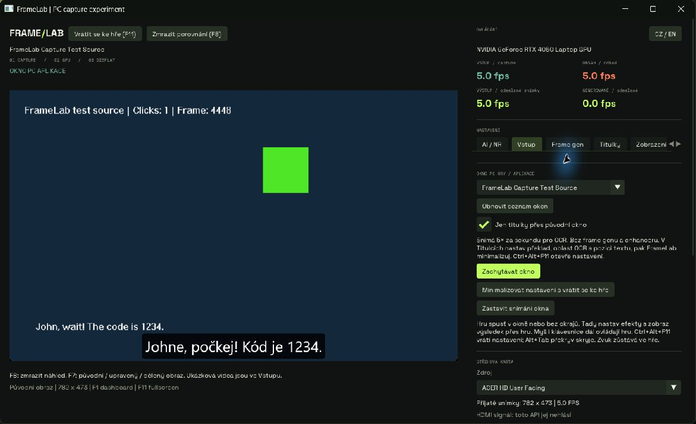
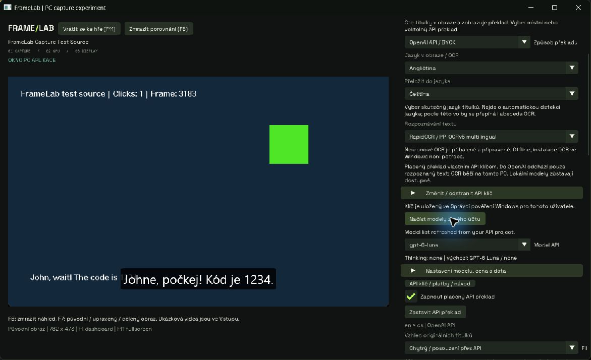

Konzole přes síť.
Titulky přímo nad hrou.
PlayStation nebo Xbox může poslat obraz do okna PC. FrameLab pak může zpracovat obraz, nebo jen přečíst původní titulky a položit překlad nad ně.
Dostupnost: zachytávání oken, režim „jen titulky“ a volitelné OpenAI API jsou součástí veřejného preview.18. Klíč API je vlastní a překlad se platí zvlášť; místní modely zůstávají k dispozici. Fyzickou konzoli jsme při tomto testu neměli; postup Remote Play vychází z dokumentace výrobců.
PlayStation 5 / PlayStation 4
- Stáhni a nainstaluj oficiální PS Remote Play.
- PS5: Nastavení → Systém → Remote Play → povolit. PS4: Nastavení → Nastavení připojení Remote Play → povolit.
- Pro probouzení z odpočinku povol připojení k internetu a zapnutí po síti.
- Na PC připoj podporovaný ovladač, otevři PS Remote Play, přihlas stejný účet a vyber konzoli.
- Ověř obraz, zvuk i ovládání. Nech přehrávač v okně a pokračuj výběrem okna ve FrameLabu.
Podrobnosti a ruční párování: návod Sony. Pro první pokus doporučujeme společnou domácí síť a kabelové připojení konzole.
Xbox Series X|S / Xbox One
- Na konzoli zapni vzdálené funkce a spusť jejich test. Postup pro aktuální systém je v návodu Xbox.
- Na PC otevři xbox.com/remoteplay v podporovaném prohlížeči, přihlas účet konzole a připoj ovladač.
- Spusť konzoli a hru. Pro stream použij vlastní okno prohlížeče; FrameLab snímá celé zvolené okno, ne jednu trvale připnutou kartu.
Remote Play přenáší vlastní konzoli. Xbox Cloud Gaming používá servery služby a nabídku dostupnou pro tvůj účet, region a předplatné. Konzoli pak nepotřebuješ. Požadavky Remote Play · oficiální popis přístupu přes prohlížeč.
Propojení okna s FrameLabem
- Hru nebo stream nech v režimu okna / bez okrajů. Zapni ve hře původní titulky.
- Ve FrameLabu otevři Vstup → Okno PC hry / aplikace → Obnovit seznam oken.
- Vyber okno PS Remote Play, prohlížeče s Xboxem nebo samotné PC hry.
- Pro celý upravený obraz nech „Jen titulky“ vypnuté a klikni Zachytávat okno. Nastav dostupný frame gen a enhancer; potom Zobrazit výsledek přes hru.
- Pro pouhý překlad nejdřív zaškrtni Jen titulky přes původní okno a spusť snímání.
Myš a klávesnice procházejí do původní hry; zvuk dál přehrává zdrojová aplikace. Ctrl+Alt+F11 otevře nastavení. Při přepnutí do jiné aplikace se překryv skryje. Na vlastní hře zůstávají její původní podmínky a omezení snímání.
Remote Play přidává síťovou kompresi a prodlevu ještě před FrameLabem. Frame gen je neodstraní. Čitelnost OCR závisí i na bitrate, ostrosti a velikosti původních titulků. Capture karta zůstává další cestou pro situace, kde stream nevyhovuje.
Jen titulky, původní obraz hry
- Ve Vstupu vyber okno, zapni Jen titulky přes původní okno a klikni Zachytávat okno.
- V Titulcích vyber jazyk originálu, cílový jazyk a způsob překladu. U místního modelu dokonči potřebné stažení.
- Vyber oblast OCR kolem původních titulků. Volitelně označ slovo pro filtr barvy a velikosti. Filtr textu nenahrazuje vhodnou oblast.
- Nastav velikost a pozici překladu; může být pod oblastí OCR nebo na vlastní pozici. Vypni zakrývání originálu, pokud chceš vidět oba texty.
- Zapni překlad. Ve Vstupu klikni Minimalizovat nastavení a vrátit se ke hře. FrameLab dál snímá pro OCR a kreslí pouze titulky.
Tento režim snímá 5× za sekundu a pozastaví frame gen i enhancer. Po zastavení snímání obnoví jejich předchozí volbu. Text se vykresluje v pixelech aktuálního okna, bez zvětšování malého náhledu. Lokální překladač dál potřebuje svůj CPU/GPU výkon; s API zůstává místně OCR, snímání a kreslení překryvu. Nejde o nulovou zátěž.
Zastavení: vrať nastavení přes Ctrl+Alt+F11 nebo ikonu FrameLabu a zvol Zastavit snímání okna. Minimalizace zdrojové hry pozastaví snímání. Režim vyžaduje okno nebo borderless, ne exkluzivní fullscreen.
Volitelný překlad přes vlastní OpenAI API
- Otevři API platformu a vytvoř klíč ve svém projektu. Na platformě zkontroluj API billing, kredit a limity. Dostupnost placeného API ověř odděleně od předplatného ChatGPT.
- Ve FrameLabu: Titulky → Způsob překladu → OpenAI API / BYOK. Vlož klíč do maskovaného pole a klikni Bezpečně uložit klíč.
- Klikni Načíst modely z mého účtu. Vyber model, ke kterému má projekt přístup.
- Pro začátek vyber GPT-6 Luna, thinking „none“, teplotu nech nenastavenou. Je to levný výchozí kandidát, ne záruka nejrychlejší odpovědi v každé síti.
- Nastav jazyky a OCR, pak zaškrtni Zapnout placený API překlad. Každý nový rozpoznaný text může vytvořit účtovaný požadavek. Stejné překlady se v běžícím workeru krátkodobě cachují.
Klíč zůstává ve Správci pověření Windows u tohoto uživatele. Není v ZIPu, nastavení ani veřejných výsledcích. Odstranit uložený klíč jej odstraní i pro další instalace FrameLabu pod stejným uživatelem. Revokaci klíče na serveru provedeš na API platformě.
Model a jeho nastavení patří k sobě
Seznam modelů se načítá živě. Rozhraní /models ale neudává povolenou teplotu nebo thinking. FrameLab proto používá datované ověřené profily. Nepodporované volby neposílá; neznámé modely zobrazí šedě. Nový model vyžaduje doplnění profilu, nestačí podobný název.
Více uvažování obvykle znamená více času a tokenů. Některé modely „none“ vůbec neumějí. U konfigurace bez podpory teploty se parametr úplně vynechá. Dočasná chyba sítě nebo serveru přeskočí titulek; chyby klíče, nastavení a HTTP 429 (limit/kvóta) vyžadují opravu a ruční restart. Tentýž chybný titulek se hned automaticky neopakuje. Oficiální pravidla parametrů.
Co opouští PC a kolik to stojí
Odesílá se rozpoznaný text a instrukce pro překlad, nikoli screenshoty ani herní zvuk. Používáme store=false; to není příslib nulového uchování u poskytovatele. Pravidla dat OpenAI.
Referenční cena GPT-6 Luna ověřená 23. 11. 2026: $0,10 za milion vstupních a $0,50 za milion výstupních tokenů ve Standard režimu. Počítají se i instrukce a případné reasoning tokeny, ne jen délka výsledného titulku. Aktuální model a ceny. Skutečný test 500 replik včetně spotřeby →
Pro návrat bez cloudu vypni překlad, vyber Local / offline a znovu zapni původní místní model.
Preview.20: po nastavení stačí uložený podporovaný model a klíč; seznam modelů není nutné znovu načítat. V Titulkách použij Spustit OpenAI překlad nebo Restartovat OpenAI překlad. Ruční restart vymaže aktuální relaci a historii. Dočasná chyba sítě/serveru přeskočí titulek; chybu klíče, konfigurace a HTTP 429 (limit/kvóta) je nutné opravit a překlad znovu spustit.
Preview.20: Nejdelší čekání na titulek (sekundy) a Tokenů na odpověď mají v čisté instalaci hodnoty 2 sekundy / 1000 tokenů. Čas platí pro všechny repliky titulku. Po timeoutu se pokračuje nejnovějším titulkem bez běžného restartu workeru a mazání historie. Více výstupních tokenů nezvětšuje kontext modelu ani nezaručuje včasnou odpověď.
Když něco nefunguje
Černý obraz nebo okno chybí v seznamu
Nejdřív obnov zdrojové okno a ověř, že samo zobrazuje hru. Obnov seznam a vyber správné okno. Chráněný obsah nebo aplikace zakazující zachytávání nemusí poskytnout obraz; FrameLab tuto ochranu neobchází. Nejde o potvrzení kompatibility všech verzí Remote Play.
Titulky nepřibývají, nebo se čtou SPZ a jména
Zapni originální titulky ve hře. Vyber správný jazyk OCR, zúž čtenou oblast a označ vzhled textu. Samotné filtry mohou chybovat. Ověř stav modelu a chybové hlášení; API může čekat na síť, kredit nebo přístup k modelu.
Překlad se kryje s originálem
V Titulcích nastav umístění pod oblast OCR nebo vlastní pozici. Zmenši písmo, pokud se nevejde. Vypni zakrývání originálu a podle potřeby změň reakci při nedostatku prostoru u okraje.
Chci plný obraz s efekty
Zastav snímání okna, vypni „Jen titulky“, spusť snímání znovu a použij „Zobrazit výsledek přes hru“. Dostupnost NR a frame genu se stále řídí podporou GPU.
Postup na skutečných snímcích
Zachyceno v místní experimentální verzi na RTX 4050. Modré okno je naše testovací aplikace, nikoli Remote Play. Snímky dokládají OCR, API překlad, polohu, minimalizaci a průchod kliknutí; nepotvrzují připojení konzole.

